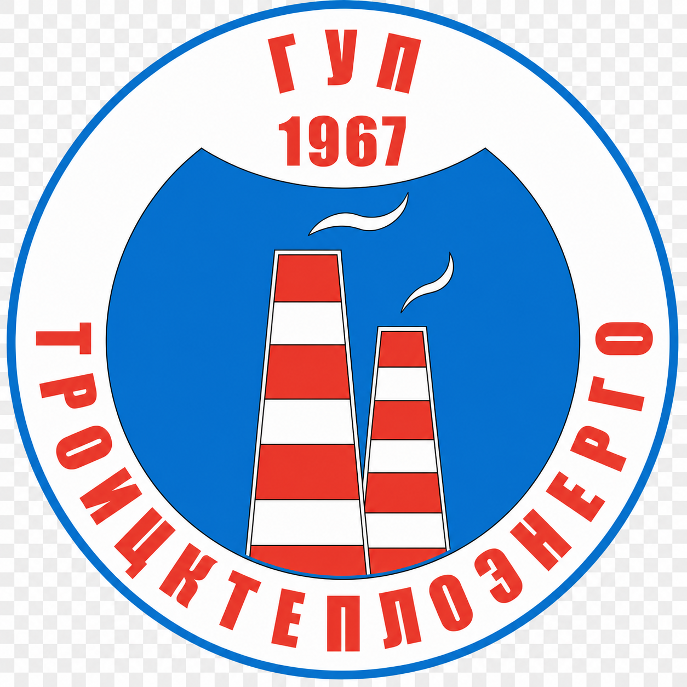
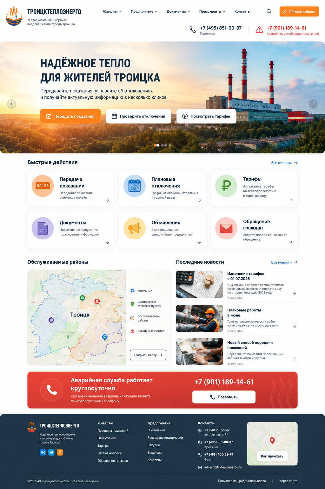

Передача
показаний
Передайте показания
счётчиков онлайн

ТРОИЦКТЕПЛОЭНЕРГОТеплоснабжение и горячее
Передайте показания
счётчиков онлайн
График отключений отопления
и горячей воды
Актуальные тарифы
на тепловую энергию
и горячую воду
Нормативные документы
и раскрытие информации
Все официальные
уведомления предприятия
Задайте вопрос или оставьте
обращение
Информация об утверждении тарифов на тепловую энергию и горячую воду
28 мая 2025График профилактических работ на тепловых сетях и оборудовании
27 мая 2025Передавайте показания через личный кабинет быстро и удобно.
25 мая 2025При возникновении аварийных ситуаций звоните
по круглосуточному телефону